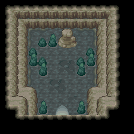

078 非现世的气息
一句话目标：调查每周日出现在擂钵山深处的“非现世的气息”。
接取地点
准备条件
- 主线进度需满足脚本旗标 4246。
- 按对白需在周日前往；并需有会冲浪与攀岩的宝可梦才能抵达该处。
操作步骤
- 到卡吉镇宝可梦中心找委托人（4,17）。他说周日在下层修炼时感到一股来自深处的不祥气息，「简直就是……非现世的气息」，请你去调查源头。接受任务（置旗标 6293）。他补充「我是在周日感受到那股气息的」「想要抵达那边，需要有学会冲浪和攀岩的宝可梦」。
- 在周日带上会冲浪、攀岩的宝可梦前往擂钵山深处，调查气息本体（55:41，约 6,6）。
- 调查触发野生的弃世猴（0257）Lv35 战斗（脚本 setwildbattle 弃世猴 35 级、无携带物）。战斗结束后气息消失（置旗标 6294）。
- 回卡吉镇宝可梦中心向委托人复命。
交付检查
与委托人对话，得知那股气息来自“弃世猴”，领取报酬（置完成旗标 6295）。之后他说「非现世的气息消失了，现在又可以去擂钵山修炼了。」
奖励
- 锐利之牙 0120 ×1
- 4 点 BracerPoints、4000$
容易卡住的位置
- 气息是周日限定，对白两处都强调“周日”。
- 需要冲浪与攀岩才能抵达擂钵山深处。
- setwildbattle 仅证明对战设置，不能声称一定可捕捉。
来源与待补字段
- 来源包：data/quest_packets/078.json。
- 待补：气息出现的周日刷新判定（旗标 6296/6297 与地图脚本）未在本包定位；能否重复触发、是否只能讨伐一次未明。
地点地图
共享RGB底图；点击可缩放定位。数字对应本页相关地点，不代表地图上全部事件。
卡吉镇


1 非现世的气息（4,17）
擂钵山

1 非现世的气息（6,6）